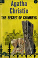
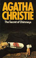
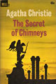
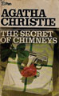
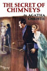
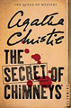
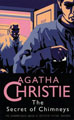
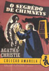

First published in the UK by The Bodley Head in June 1925 and in the US by Dodd, Mead and Company later in the same year. It introduces the characters of Superintendent Battle and Lady Eileen "Bundle" Brent. The UK edition retailed at seven shillings and sixpence (7/6) and the US edition at $2.00.
At the request of George Lomax, Lord Caterham reluctantly agrees to host a weekend party at his home, Chimneys. A murder occurs in the house, beginning a week of fast-paced events with police among the guests.
The novel was well received at first publication, described as more than a murder mystery, as a treasure hunt. Later reviews found it a "first-class romp" and one of the author's best early thrillers. A recent review says the novel requires a hefty suspension of disbelief. Later reviewers note that descriptions of characters use the terminology of the times in which it was written, and might be considered racist decades later.








Screen Versions
An adaptation was produced for the fifth series of Marple, with Julia McKenzie as the lead. The adaptation retains Chimneys as the setting.
Miss Marple finds herself spending the weekend at Chimneys, the stately home of Lord Caterham whose late wife was her cousin. The weekend has something of a diplomatic air to it as the Austrian Count Ludwig von Stainach is also there to negotiate a trade agreement with the British that will give it access to iron ore. Chimneys was once the 'in' place to be for a fancy weekend but over many years, it has become somewhat run-down. Except for a maid who disappeared with a valuable diamond in the 1920s, not much of note has happened there for a long time. Everyone is surprised when Count von Stainach says that in addition to signing the trade agreement, he also wants to purchase Chimneys. Lord Caterham's eldest daughter Bundle is dead set against the idea but it all takes a very serious turn when the Count is found murdered. There are several suspects and another member of the household will die before Miss Marple solves the crime.
The substitution of Miss Marple as the main detective is only the first of many changes made to the story, which amalgamates and renames several characters, turns the political connection (transferred from the fictitious Herzoslovakia to Austria) into one of several red herrings, and comprehensively changes both the murderer's identity and motive. It also features elements from the Miss Marple short story The Herb of Death.
The Radio Times observed that this production was "classic Agatha Christie, even though it's only distantly related to her original ... purists will be utterly flummoxed – and the plot has more holes in it than the murder victim".